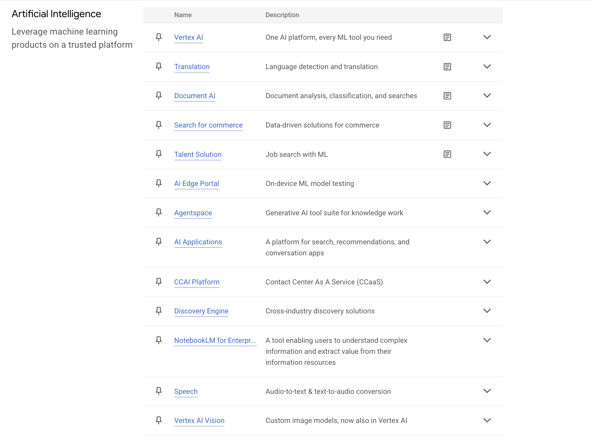
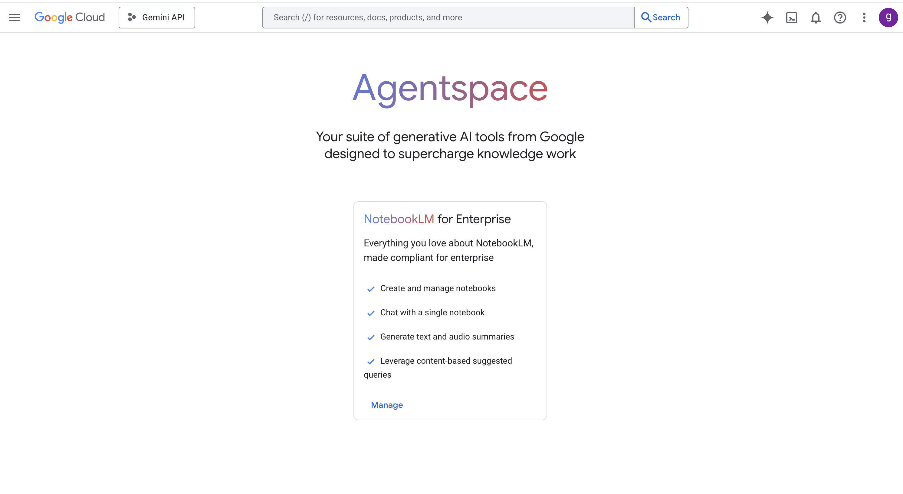
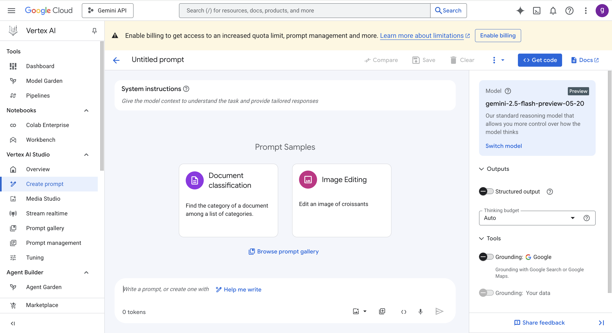

Google Cloud AI services#
| Service | Description | Service Type | SaaS / Shelf-Managed | Use Case Example |
|---|---|---|---|---|
| Vertex AI Studio | Rapid prototyping and testing of generative AI models | Platform | SaaS | Quickly experiment with LLMs for text generation |
| Vertex AI Agent Builder | No-code generative AI agents grounded in organizational data | Platform | SaaS | Build chatbots for internal IT helpdesk without coding |
| Generative AI Document Summarization | Summarizes documents using Vertex AI and stores in BigQuery | SaaS | SaaS | Automatically summarize lengthy legal or medical documents |
| Gemini for Google Cloud | AI-powered assistance for writing, coding, and data analysis | SaaS | SaaS | Use AI to assist developers with code generation and debugging |
| Veo 2 | AI video model for generation and editing with cinematic features | SaaS | SaaS | Create promotional videos with AI-based editing |
| Imagen 3 | Text-to-image model with advanced editing | SaaS | SaaS | Generate marketing images from text descriptions |
| Chirp 3 | Synthetic speech model for realistic voice and transcription | SaaS | SaaS | Develop realistic voice assistants and transcription services |
| Lyria | Text-to-music generation model | SaaS | SaaS | Generate background music tracks for apps or games |
| Vertex AI Platform | Unified platform for building, deploying ML models | Platform | SaaS | Deploy production-grade ML models for customer churn prediction |
| Vertex AI Notebooks | Environments for model development (e.g., Colab, Workbench) | Platform | SaaS | Collaborative data science and model development |
| AutoML | Train custom ML models with minimal effort | Platform | SaaS | Build custom image classifiers without deep ML expertise |
| Natural Language API | Sentiment analysis and entity recognition from text | API | SaaS | Analyze customer reviews for sentiment trends |
| Speech-to-Text API | Converts speech into text | API | SaaS | Transcribe customer service calls in real-time |
| Text-to-Speech API | Generates natural-sounding speech | API | SaaS | Create audio narration for e-learning courses |
| Translation API | Translates text into multiple languages | API | SaaS | Provide multilingual support on websites and apps |
| Dialogflow API | Conversational interface for chatbots and voice apps | API | SaaS | Build customer support chatbots for websites |
| Vision API | Image labeling, face detection, OCR | API | SaaS | Automate product tagging in e-commerce |
| Video Intelligence API | Video content analysis and object tracking | API | SaaS | Detect and index objects and actions in surveillance videos |
| Vertex AI Vision | Build and deploy computer vision applications | Platform | SaaS | Develop quality control systems for manufacturing |
| Document AI API | Extracts data from structured/unstructured documents | API | SaaS | Extract invoice details automatically for accounts payable |
| Document Warehouse API | Stores and retrieves processed documents | API | SaaS | Centralize storage of processed contract documents |
| Dialogflow CX/ES | Build advanced conversational agents | Platform | SaaS | Create sophisticated virtual assistants with complex workflows |
| Agent Assist | Real-time agent support with AI suggestions | SaaS | SaaS | Provide call center agents with live help and suggestions |
| Contact Center AI | AI-powered virtual agents for customer service | SaaS | SaaS | Automate customer inquiries with virtual agents |
| Vertex AI Search | Semantic search and Q\&A experiences | Platform | SaaS | Implement intelligent document search within enterprise systems |
| Recommendations AI | Product recommendations using ML | SaaS | SaaS | Personalized product suggestions for e-commerce |
| Retail Search | AI-driven retail site search with personalization | SaaS | SaaS | Enhance online retail search with personalized results |
| Translation Hub | Manage and translate large content volumes | SaaS | SaaS | Localize marketing content for global audiences |
| Agentspace | Automation using agents and Gemini models | Platform | SaaS | Automate workflows with AI agents interacting on your behalf |


